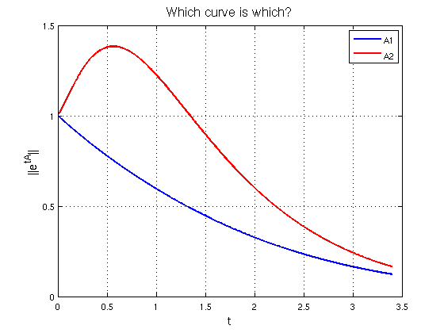

Nonnormality quiz from Trefethen and Embree
Nick Trefethen, October 2010
(Chebfun example linalg/NonnormalQuiz.m)
The frontispiece of the book Spectra and Pseudospctra presents a quiz involving two matrices:
A1 = [-1 1; 0 -1], A2 = [-1 5; 0 -2]
A1 =
-1 1
0 -1
A2 =
-1 5
0 -2
The quiz is about the behavior of solutions to the differential equation u' = Au, where A is one of these matrices. The solution of this equation is u(t) = exp(tA)u(0), where exp(tA) is the exponential of the matrix tA, computed in Matlab by the command EXPM. The maximum possible value of the quotient norm(u(t))/norm(u(0)) is equal to the matrix norm of expm(tA).
We first present the plot, then explain what it means and how we computed it with Chebfun.
e1 = chebfun(@(t) norm(expm(t*A1)),[0 3.4],'vectorize'); e2 = chebfun(@(t) norm(expm(t*A2)),[0 3.4],'vectorize'); LW = 'linewidth'; FS = 'fontsize'; hold off, plot(e1,'b',LW,2) hold on, plot(e2,'r',LW,2) ylim([0 1.5]), grid on, legend('A1','A2') xlabel('t',FS,14) ylabel('||e^{tA}||',FS,14) title('Which curve is which?',FS,16)
The plot shows two curves, one with a hump and one without. The book asks, "Which curve is which?", and doesn't reveal the answer, but here you can see that A2 is the matrix with the hump. This is surprising to some people, for one might expect the hump to correspond to A1 since it is nondiagonalizable. In fact, the nondiagonalizability of A1 is less important than the large entry 5 in the upper-right corner of A2.
This is a natural problem for Chebfun because Chebfun is good at working with functions that don't have a representation by an explicit formula. Here the function we are concerned with is norm(expm(tA)), a function of time t. Chebfun is happy to sample that function at various values of t and construct a corresponding chebfun. Since norm(expm(tA)) will not work when t is a vector, the 'vectorize' flag is included to avoid a warning message.
Reference:
L. N. Trefethen and M. Embree, Spectra and Pseudospectra: The Behavior of Nonnormal Matrices and Operators, Princeton U. Press, 2005.